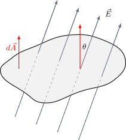
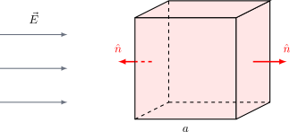
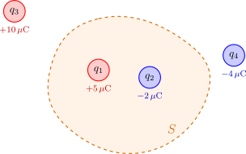
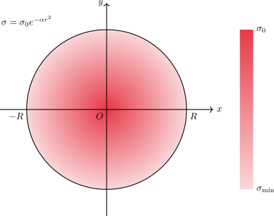

1.8 Densidad de Carga No Uniforme#
El objetivo de esta guía es que los estudiantes analicen, diferencien y grafiquen distintas distribuciones de densidad de carga en un disco plano, así como que comprendan su impacto en el campo eléctrico resultante.
Conceptos Fundamentales#
Antes de empezar, recordemos algunos conceptos clave:
Densidad de carga superficial (\(\sigma\)): Representa la cantidad de carga por unidad de área, y su unidad es C/m².
Vector de posición (\(\vec{r}\)): El vector que apunta desde el origen de coordenadas al punto donde se desea calcular el campo eléctrico (punto de campo \(P\)).
Vector de posición de la fuente (\(\vec{r}^{\, \prime}\)): El vector que apunta desde el origen hasta un elemento de carga diferencial (\(dq^{\prime}\)) en el disco.
Elemento de carga diferencial (\(dq^{\prime}\)): La cantidad de carga en una porción infinitesimal del disco. Se calcula como \(dq^{\prime} = \sigma dA\), donde \(dA\) es el elemento de área diferencial.
Campo Eléctrico (\(\vec{E}\)): El campo eléctrico producido por una distribución de carga continua se calcula mediante la integral \(\vec{E}=\frac{1}{4\pi\epsilon_{0}}\int dq^{\prime}\frac{\left(\vec{r}-\vec{r}^{\, \prime}\right)}{\left|\vec{r}-\vec{r}^{\, \prime}\right|^{3}}\).
Análisis de Densidades de Carga#
A continuación, se presentan diferentes tipos de densidades de carga para un disco de radio \(R\). Analizaremos sus características y cómo afectan la distribución de la carga y el campo eléctrico.
Densidad de carga constante (\(\sigma = \sigma_{0}\))#
Descripción: La densidad de carga superficial es uniforme en todo el disco. Esto significa que la carga está distribuida de manera homogénea. A diferencia de las otras densidades de carga que dependen de la posición, en este caso, cada elemento de área (\(dA\)) del disco contribuye con la misma cantidad de carga (\(dq = \sigma_{0} \, dA\)).

Preguntas:
Si la carga total del disco es \(Q\), ¿cuál es la relación entre \(Q\), \(\sigma_0\) y el área del disco \(A\)?
¿Cuál sería la dirección del campo eléctrico en un punto \(P\) sobre el eje de simetría (\(z\)) del disco? ¿Por qué?
Si comparas el campo eléctrico de un disco con carga constante con el de un disco con carga que varía con el ángulo, ¿cuál es la principal diferencia en términos de la dirección del vector de campo eléctrico en el eje \(z\)?
¿En qué punto, a lo largo del eje \(z\), el campo eléctrico es máximo?
Densidad de carga con dependencia angular (\(\sigma = \sigma_{0}\cos\theta\))#
Descripción: La densidad de carga en el disco no es constante y varía con el ángulo \(\theta\). Como se puede ver en el mapa de colores, la densidad de carga es positiva (\(\sigma > 0\)) en la mitad derecha del disco y negativa (\(\sigma < 0\)) en la mitad izquierda. La densidad de carga es cero a lo largo del eje \(y\) y alcanza sus valores máximos y mínimos en el eje \(x\).
{kind=link}

{kind=link}

Preguntas:
¿Por qué la densidad de carga es cero en el eje \(y\)?
¿En qué parte del disco la densidad de carga es más alta? ¿Y más baja?
¿Cómo crees que esta distribución de carga afectará la dirección del campo eléctrico en un punto \(P\) sobre el eje \(z\)?
Observa la integral del campo eléctrico. ¿Por qué las componentes en \(\hat{\jmath}\) y \(\hat{k}\) se anulan, dejando solo una componente en \(\hat{\imath}\)? ¿Qué significa esto físicamente para el campo eléctrico?
Densidad de carga con dependencia radial (\(\sigma = \sigma_{0}(r/R)\))#
Descripción: En este caso, la densidad de carga depende de la distancia radial (\(r\)) desde el centro del disco. La densidad es cero en el centro (\(r=0\)) y aumenta linealmente hasta un valor máximo de \(\sigma_0\) en el borde del disco (\(r=R\)). Toda la carga es del mismo signo (positiva, asumiendo \(\sigma_0 > 0\)) y se distribuye de manera simétrica alrededor del centro.
{kind=link}

Preguntas:
Si la carga total del disco es \(Q\), ¿cuál sería la expresión para \(Q\) en términos de \(\sigma_0\) y \(R\)?
A diferencia del caso anterior, ¿qué tipo de simetría tiene esta distribución de carga?
Dada la simetría de la distribución de carga, ¿qué componentes del campo eléctrico esperarías que sean cero para un punto \(P\) en el eje \(z\)?
Si la densidad de carga fuera \(\sigma = \sigma_{0}(r^2/R^2)\), ¿cómo cambiaría la distribución de carga? ¿El campo eléctrico en el eje \(z\) sería más fuerte o más débil en comparación con el caso \(\sigma = \sigma_{0}(r/R)\)? Justifica tu respuesta.
Densidad de carga con dependencia exponencial (\(\sigma = \sigma_{0}e^{-\alpha r^{2}}\))#
Descripción: Esta distribución de carga también tiene simetría radial, pero la densidad de carga disminuye exponencialmente a medida que la distancia radial (\(r\)) aumenta. La densidad es máxima en el centro del disco, \(\sigma(0) = \sigma_0\), y disminuye hasta un valor mínimo en el borde del disco, \(\sigma(R) =\sigma_{\text{mín}}\). Esta distribución se asemeja a una concentración de carga en el centro.
{kind=link}

Preguntas:
¿Qué representa la constante \(\alpha\) en la expresión de la densidad de carga? ¿Qué sucede si el valor de \(\alpha\) es muy grande? ¿Y si es muy pequeño?
¿Esta distribución de carga es de un solo signo o de múltiples signos? ¿Por qué?
Si comparas esta distribución con la del punto anterior, ¿qué diferencia clave encuentras en la forma en que la carga se distribuye? ¿Cómo crees que esta diferencia afectaría el campo eléctrico en un punto cercano al centro del disco en el eje \(z\)?
Imagina que el disco se extiende hasta el infinito (\(R \to \infty\)). ¿Qué pasaría con el campo eléctrico? ¿Se asemejaría al campo de algún otro objeto geométrico conocido?
Preguntas de Análisis#
Show code cell source
from IPython.display import display, HTML
quiz_disco_ana_html = """
<style>
.fisi-quiz-container {
border: 1px solid #e0e0e0;
padding: 15px;
margin-bottom: 25px;
border-radius: 8px;
background-color: #f8f9fa;
font-family: -apple-system, BlinkMacSystemFont, "Segoe UI", Roboto, Arial, sans-serif;
}
.fisi-question {
font-weight: 600;
margin-bottom: 15px;
color: #2c3e50;
}
.fisi-option {
margin-bottom: 10px;
display: flex;
align-items: flex-start;
cursor: pointer;
}
.fisi-option input {
margin-top: 4px;
margin-right: 10px;
}
.fisi-check-btn {
background-color: #f73bc5;
color: white;
border: none;
padding: 8px 20px;
border-radius: 4px;
cursor: pointer;
font-size: 14px;
margin-top: 10px;
font-weight: 500;
}
.fisi-check-btn:hover { background-color: #ab2988; }
.fisi-feedback {
margin-top: 15px;
padding: 12px;
border-radius: 6px;
display: none;
font-size: 0.95em;
}
</style>
<script>
// Definimos una función global única para que funcione en cualquier celda de Jupyter
if (typeof window.checkFisiQuiz === 'undefined') {
window.checkFisiQuiz = function(radioName, feedbackId) {
var radios = document.getElementsByName(radioName);
var selected = null;
var feedbackDiv = document.getElementById(feedbackId);
for (var i = 0; i < radios.length; i++) {
if (radios[i].checked) {
selected = radios[i];
break;
}
}
feedbackDiv.style.display = 'block';
if (!selected) {
feedbackDiv.style.backgroundColor = '#fff3cd';
feedbackDiv.style.color = '#856404';
feedbackDiv.style.border = '1px solid #ffeeba';
feedbackDiv.innerHTML = '⚠️ Por favor, selecciona una opción.';
return;
}
var isCorrect = selected.getAttribute('data-correct') === 'true';
var msg = selected.getAttribute('data-fb');
if (isCorrect) {
feedbackDiv.style.backgroundColor = '#d4edda';
feedbackDiv.style.color = '#155724';
feedbackDiv.style.border = '1px solid #c3e6cb';
feedbackDiv.innerHTML = '✅ <strong>¡Correcto!</strong><br>' + msg;
} else {
feedbackDiv.style.backgroundColor = '#f8d7da';
feedbackDiv.style.color = '#721c24';
feedbackDiv.style.border = '1px solid #f5c6cb';
feedbackDiv.innerHTML = '❌ <strong>Incorrecto.</strong><br>' + msg;
}
};
}
</script>
<div class="fisi-quiz-container">
<div class="fisi-question">
1. Considera el disco con densidad de carga angular σ = σ₀ cos(θ). Si calculamos el campo eléctrico en un punto P situado sobre el eje Z central, ¿hacia dónde apuntará el vector resultante?
</div>
<label class="fisi-option">
<input type="radio" name="qdisco1" value="a" data-fb="Incorrecto. La distribución no tiene simetría de revolución. La mitad derecha es positiva y la izquierda es negativa.">
<span>A lo largo del eje Z, ya que las componentes perpendiculares se anulan por simetría.</span>
</label>
<label class="fisi-option">
<input type="radio" name="qdisco1" value="b" data-correct="true" data-fb="¡Correcto! La mitad derecha (X positivo) tiene carga positiva y la izquierda (X negativo) carga negativa. El campo generado por la parte positiva 'empuja' hacia la izquierda y el de la negativa 'tira' hacia la izquierda, por lo que el campo resultante sobre el eje Z es completamente horizontal y paralelo al eje X.">
<span>A lo largo del eje X, paralelo a la superficie del disco.</span>
</label>
<label class="fisi-option">
<input type="radio" name="qdisco1" value="c" data-fb="Incorrecto. Si bien el campo tiene componente en el plano XY, no apunta en la dirección Y. Revisa los signos de la función coseno.">
<span>A lo largo del eje Y, paralelo a la línea donde la carga es nula.</span>
</label>
<button class="fisi-check-btn" onclick="checkFisiQuiz('qdisco1', 'feedback-disco1')">Comprobar</button>
<div class="fisi-feedback" id="feedback-disco1"></div>
</div>
<div class="fisi-quiz-container">
<div class="fisi-question">
2. Tienes dos discos del mismo radio R y misma carga total Q. El Disco A tiene carga constante (σ = constante), mientras que el Disco B tiene carga que aumenta hacia el borde (σ = σ₀(r/R)). Si te paras en un punto P en el eje Z muy cercano al centro del disco, ¿qué campo será más intenso?
</div>
<label class="fisi-option">
<input type="radio" name="qdisco2" value="a" data-correct="true" data-fb="¡Exacto! Cerca del origen (r ≈ 0), la densidad de carga del Disco B tiende a cero, mientras que el Disco A tiene carga constante en todas partes, incluyendo el centro. Por lo tanto, el material cargado 'justo debajo' del punto P es mucho mayor en el Disco A.">
<span>El campo del Disco A (carga constante) será más intenso.</span>
</label>
<label class="fisi-option">
<input type="radio" name="qdisco2" value="b" data-fb="Incorrecto. Recuerda que para el Disco B, en r=0 la densidad de carga es 0. Casi no hay carga cerca del centro para generar campo.">
<span>El campo del Disco B (carga hacia el borde) será más intenso.</span>
</label>
<label class="fisi-option">
<input type="radio" name="qdisco2" value="c" data-fb="Incorrecto. Aunque la carga total Q es la misma, la distribución importa enormemente en puntos cercanos. El teorema de Gauss puro no nos salva aquí porque no estamos rodeando toda la carga.">
<span>Ambos campos serán exactamente iguales porque la carga total Q es la misma.</span>
</label>
<button class="fisi-check-btn" onclick="checkFisiQuiz('qdisco2', 'feedback-disco2')">Comprobar</button>
<div class="fisi-feedback" id="feedback-disco2"></div>
</div>
<div class="fisi-quiz-container">
<div class="fisi-question">
3. Analizando la densidad σ = σ₀e<sup>-αr²</sup>. Si el parámetro α toma un valor extremadamente grande (α → ∞), ¿a qué modelo físico idealizado se aproximará el comportamiento de este disco?
</div>
<label class="fisi-option">
<input type="radio" name="qdisco3" value="a" data-fb="Incorrecto. Si α es muy grande, la exponencial decae a cero casi inmediatamente al alejarse del centro r=0. Es decir, casi toda la carga está en el centro.">
<span>A un anillo cargado de radio R.</span>
</label>
<label class="fisi-option">
<input type="radio" name="qdisco3" value="b" data-fb="Incorrecto. Para que sea un plano infinito uniforme, el parámetro α debería tender a cero, de modo que e^0 = 1 y la densidad sea constante en todas partes.">
<span>A un plano infinito con densidad uniforme.</span>
</label>
<label class="fisi-option">
<input type="radio" name="qdisco3" value="c" data-correct="true" data-fb="¡Correcto! Si α es gigante, la función e^(-αr²) decae a cero rapidísimo al alejarse apenas un poco de r=0. Físicamente, esto significa que toda la carga está concentrada en un punto central minúsculo, comportándose matemáticamente como una carga puntual.">
<span>A una sola carga puntual en el origen.</span>
</label>
<button class="fisi-check-btn" onclick="checkFisiQuiz('qdisco3', 'feedback-disco3')">Comprobar</button>
<div class="fisi-feedback" id="feedback-disco3"></div>
</div>
"""
display(HTML(quiz_disco_ana_html))